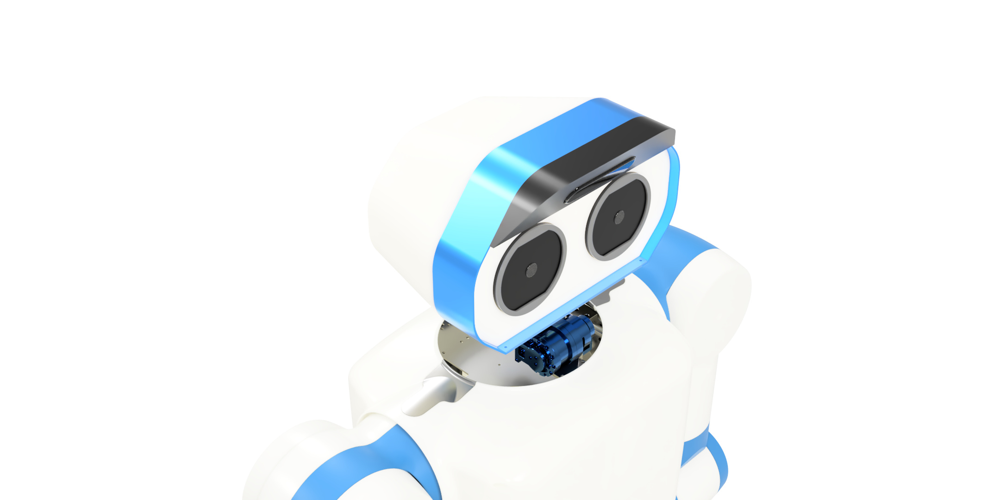

Development of Humanoid P-73
Design of a High-Payload Humanoid Platform
for Precision Tool Manipulation

The Humanoid P-73 Development Project was carried out under Blue Robin Inc. It was led by CTO Sungmoon Hur, Seungbin You, and Eunho Sung.
The frame and cover were manufactured by Baro, while the actuator structures were fabricated by Geosang. In addition, the electronic system integration was realized through collaboration with experts from multiple fields.
Together, these efforts enabled the successful development of a next-generation humanoid robotic platform.